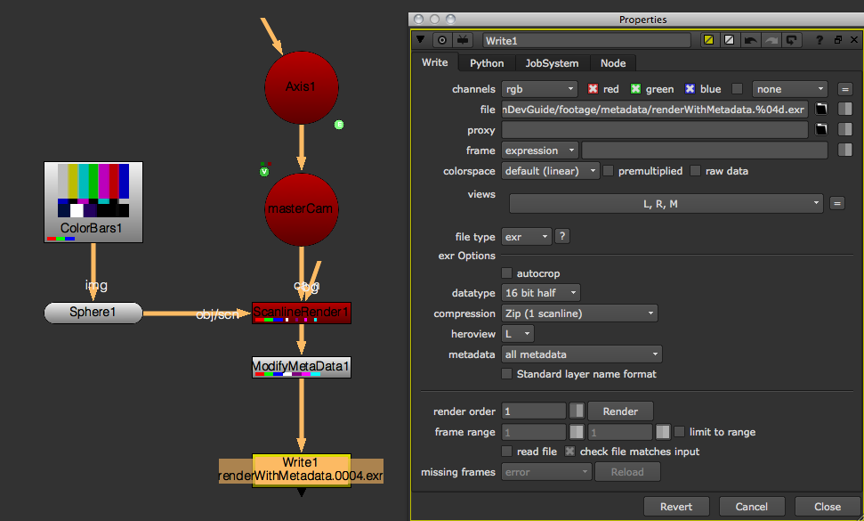
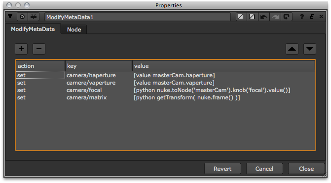
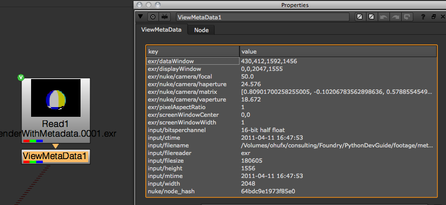

This chapter explains how to read and write metadata.
The metadata() method returns a dictionary containing the metadata for the specified node:
node = nuke.toNode( 'Read1' )
print node.metadata()
# Result:
{'exr/displayWindow': [0, 0, 2047, 1555], 'input/width': 2048, 'exr/nuke/camera/vaperture': '18.672', 'input/bitsperchannel': '16-bit half float', 'input/filereader': 'exr', 'nuke/node_hash': 'c82817f8e9526abe', 'input/mtime': '2011-04-11 16:47:54', 'exr/nuke/camera/haperture': '24.576', 'input/ctime': '2011-04-11 16:47:54', 'exr/nuke/camera/matrix': '[-0.30901703238487244, -0.16514922678470612, 0.93660777807235718, 9.5105648040771484, 0.0, 0.98480772972106934, 0.1736481785774231, 2.0, -0.95105648040771484, 0.05366024374961853, -0.30432236194610596, -3.0901703834533691, 0.0, 0.0, 0.0, 1.0]', 'input/filename': '/Volumes/ohufx/consulting/Foundry/PythonDevGuide/footage/metadata/renderWithMetadata.0003.exr', 'input/filesize': 193828, 'exr/screenWindowCenter': [0.0, 0.0], 'exr/dataWindow': [463, 417, 1518, 1435], 'exr/nuke/camera/focal': '50.0', 'exr/screenWindowWidth': 1.0, 'input/height': 1556, 'exr/pixelAspectRatio': 1.0}
To make this a little more readable, we can instead use:
node = nuke.toNode( 'Read1' )
for k, v in node.metadata().iteritems():
print k, v
# Result:
exr/displayWindow [0, 0, 2047, 1555]
input/width 2048
exr/nuke/camera/vaperture 18.672
input/bitsperchannel 16-bit half float
input/filereader exr
nuke/node_hash c82817f8e9526abe
input/mtime 2011-04-11 16:47:54
exr/nuke/camera/haperture 24.576
input/ctime 2011-04-11 16:47:54
exr/nuke/camera/matrix [-0.30901703238487244, -0.16514922678470612, 0.93660777807235718, 9.5105648040771484, 0.0, 0.98480772972106934, 0.1736481785774231, 2.0, -0.95105648040771484, 0.05366024374961853, -0.30432236194610596, -3.0901703834533691, 0.0, 0.0, 0.0, 1.0]
input/filename /Volumes/ohufx/consulting/Foundry/PythonDevGuide/footage/metadata/renderWithMetadata.0003.exr
input/filesize 193828
exr/screenWindowCenter [0.0, 0.0]
exr/dataWindow [463, 417, 1518, 1435]
exr/nuke/camera/focal 50.0
exr/screenWindowWidth 1.0
input/height 1556
exr/pixelAspectRatio 1.0
To create custom metadata in a stream, you need the ModifyMetaData node. To render custom metadata, you need to use a file format that supports it (for example, exr).
The ModifyMetaData node accepts expression syntax, which means you can use TCL and, to a limited extend, Python. In this example, we want to write a camera’s focal length and aperture as well as its transform matrix into the metadata.
In our example, the camera’s two aperture fields are set using TCL syntax. The camera’s focal length is set using Python. The transform matrix is set using Python and a custom function called getTransform. This is what it looks like:
def getTransform( frame ):
cam = nuke.toNode( 'masterCam' )
m = []
for i in range(16):
m.append( cam['world_matrix'].valueAt( frame, i ) )
return m
By placing the above code into your init.py or menu.py (or by importing it there), you can make it available in the knobs and therefore add all kinds of customizations to your ModifyMetaData node.
In this example, we look at a script that creates a camera based on the metadata in an exr file. You can download the example exr sequence here.
Start a new function that checks for valid metadata in a node and creates a camera if it finds enough information. To access a node’s metadata anywhere in the stream, use the metadata method:
def createMetaDatCam( node ):
mDat = node.metadata()
Next, collect a list of all the fields we expect to find in the metadata and prefix them with the group name (to get the full name as assigned in the metadata):
reqFields = ['exr/nuke/camera/%s' % i for i in ('focal', 'haperture', 'vaperture', 'matrix')]
You can check if the required fields are a subset of the available metadata. If not, stop the script:
if not set( reqFields ).issubset( mDat ):
print 'no metdata for camera found'
return
Ask the user for the frame range to create the camera for. Set the default value in the dialog to the node’s frame range:
first = node.firstFrame()
last = node.lastFrame()
ret = nuke.getFramesAndViews( 'Create Camera from Metadata', '%s-%s' %( first, last ) )
nuke.getFramesAndViews returns a list where the first item is the frame range and the second the requested views. Split off the frame range and convert the frame range string to a frame range object for easier handling. You can ignore the views for now.
fRange = nuke.FrameRange( ret[0] )
Create a Camera node and set its useMatrix knob to True:
cam = nuke.createNode( 'Camera2' )
cam['useMatrix'].setValue( True )
Loop through the knobs you need and set them all to be animated:
for k in ( 'focal', 'haperture', 'vaperture', 'matrix'):
cam[k].setAnimated()
Before you loop through the frame range to assign keyframes, create a progress bar so the user can cancel the process in the UI:
task = nuke.ProgressTask( 'Baking camera from meta data in %s' % node.name() )
Start the loop using the enumerate function. This gives you the index of the current iteration, which you can use to update the progress bar (in this example, it’s referenced as curTask). As always when using progress bars, you should check if the user has hit the Cancel button to stop the loop:
for curTask, frame in enumerate( fRange ):
if task.isCancelled():
break
Update the task message, so we know where we are:
task.setMessage( 'processing frame %s' % frame )
Now grab the camera values in the metadata for focal length and aperture at the current frame, and convert them to float values so they can be assigned to the knobs:
for k in ( 'focal', 'haperture', 'vaperture' ):
val = float( node.metadata( 'exr/nuke/camera/%s' % k, frame ) )
Assign the new value to the knob:
cam[ k ].setValueAt( float( val ), frame )
This takes care of the projection parameters. Now you need to deal with the camera’s transform. In this case, the string held in the metadata is just a Python list, so you can turn it back into a list using evaluate:
matrixList = eval( node.metadata('exr/nuke/camera/matrix') )
Iterate through the list and assign each value to the camera’s matrix knob at the current frame:
for i, v in enumerate( matrixList ):
cam[ 'matrix' ].setValueAt( v, frame, i)
Finally, update the progress bar, so we know what’s going on:
task.setProgress( int( float(curTask) / fRange.frames() *100) )
Here is the final code:
import nuke
def createMetaDatCam( node ):
'''
create a camera node from meta data.
This assumes the following keys in the given nodes meta data stream: 'focal', 'haperture', 'vaperture' and 'matrix',
where 'matrix' carries the result of "[python nuke.toNode( 'Camera1' ).knob('world_matrix').valueAt( nuke.frame() )]"
args:
node - node to check for meta data
ask - prompt before creating camera
'''
mDat = node.metadata()
reqFields = ['exr/nuke/camera/%s' % i for i in ('focal', 'haperture', 'vaperture', 'matrix')]
if not set( reqFields ).issubset( mDat ):
print 'no metdata for camera found'
return
first = node.firstFrame()
last = node.lastFrame()
ret = nuke.getFramesAndViews( 'Create Camera from Metadata', '%s-%s' %( first, last ) )
fRange = nuke.FrameRange( ret[0] )
cam = nuke.createNode( 'Camera2' )
cam['useMatrix'].setValue( True )
for k in ( 'focal', 'haperture', 'vaperture', 'matrix'):
cam[k].setAnimated()
task = nuke.ProgressTask( 'Baking camera from meta data in %s' % node.name() )
for curTask, frame in enumerate( fRange ):
if task.isCancelled():
break
task.setMessage( 'processing frame %s' % frame )
# GET ALL FRAMES
for k in ( 'focal', 'haperture', 'vaperture' ):
val = float( node.metadata( 'exr/nuke/camera/%s' % k, frame ) )
cam[ k ].setValueAt( float( val ), frame )
# CONVERT STRING BACK TO LIST OBJECT AND ASSIGN
matrixList = eval( node.metadata('exr/nuke/camera/matrix') )
for i, v in enumerate( matrixList ):
cam[ 'matrix' ].setValueAt( v, frame, i)
# UPDATE PROGRESS BAR
task.setProgress( int( float(curTask) / fRange.frames() *100) )